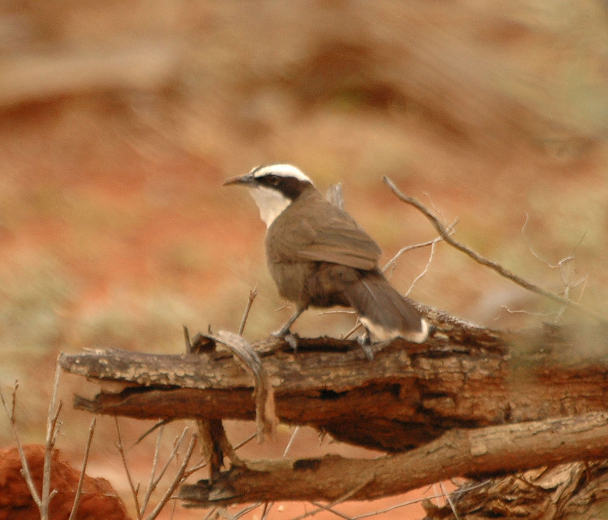

Pomatostomus halli
The gregarious Hall's Babbler is dark brown all over excluding the very wide white eyebrows and and a browny-white bib on their chest. They also have a yellowish tip at the end of each tail feather. The tips make a V-shape when the tail is spread. Their downcurved bill is grey black and the iris is dark brown or red-brown and the legs and feet slate grey.